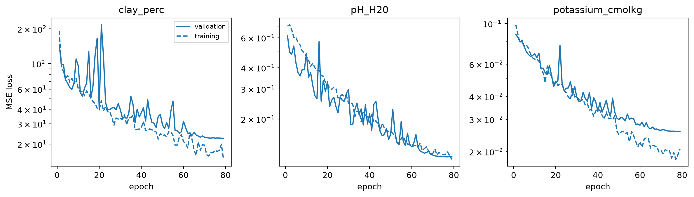
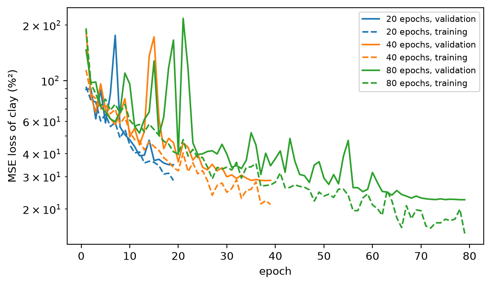

import matplotlib.pyplot as plt
from fastcore.test import *
from soilspecdata.datasets.ossl import load_osslPretraining on OSSL
Train one CNN for each of clay, pH and K on OSSL, without the ring-trial soils
The cells that read OSSL are marked #| rtdata, like the ring-trial cells of 00_data, and nbdev-test skips them unless you run nbdev-test --flags rtdata. The outputs on this page come from a local run on an Apple silicon GPU (MPS).
Training data
ossl_xy
def ossl_xy(
ossl_mir, # OSSL MIR `Spectra` on `rt_wns`, such as `load_ossl().mir(650, 4000)`
prop, # Ring-trial property, a key of `ossl_props`
)->tuple: # Spectra, targets and OSSL IDsThe OSSL samples that have a value of prop, without the ring-trial soils in ossl_overlap
The OSSL spectra on the ring-trial grid. Each property has its own set of samples, because some samples lack some properties:
om = load_ossl().mir(650, 4000)
data = {p: ossl_xy(om, p) for p in ossl_props}
for X, y, ids in data.values(): test_eq(np.isin(ids, ossl_overlap).sum(), 0)
pd.DataFrame({p: {'samples': len(y), 'min': y.min(), 'median': np.median(y), 'max': y.max()} for p, (X, y, ids) in data.items()}).T.round(2)| samples | min | median | max | |
|---|---|---|---|---|
| clay_perc | 56391.0 | 0.00 | 21.85 | 100.00 |
| pH_H20 | 59370.0 | 1.97 | 6.23 | 10.70 |
| potassium_cmolkg | 57636.0 | 0.00 | 0.30 | 3.65 |
K is skewed: in OSSL, 99% of the values are below 4.8 cmolc/kg, and the largest is 37.6. As in ossl-fuku-transfer, the K model predicts log1p(K), and the table above gives log1p values for it. The clay and pH models predict the values as they are.
Preprocessing
preprocess
def preprocess()->soilspectfm.preprocessing.SNV: # Unfitted transformSNV of each spectrum, the only preprocessing
SNV works on each spectrum separately, so fitting it on OSSL learns nothing that would differ for a ring-trial instrument. There is no derivative filter: the first convolutions of the CNN can learn derivative-like filters if they help.
Pretraining
pretrain_history
def pretrain_history(
fname
)->pandas.DataFrame: # One row per epoch: losses and validation R²The training history that pretrain saved under fname
load_pretrained
def load_pretrained(
fname
)->soilspecdl.models.SpectralCNN: # The model, on the CPULoad the weights that pretrain saved under fname
pretrain
def pretrain(
X, # Preprocessed OSSL spectra, on `rt_wns`
y, # Targets, from `ossl_xy`
fname, # File name for the weights, without extension
seed:int=42, # Seed for the validation split and the training
epochs:int=80, # Number of one-cycle epochs
lr:float=0.001, # Maximum learning rate
)->soilspecdl.models.SpectralCNN: # The trained model, on the CPUTrain a SpectralCNN on OSSL, or load the weights that an earlier run saved under fname
model_dir
def model_dir()->pathlib.Path: # Folder of pretrained weights and training historiesmodels/ossl-rt-transfer in data_path()
The training settings are those of ossl-fuku-transfer, a maximum learning rate of 10⁻³ with 10% of the samples for validation, except the number of epochs. Training runs for 80 one-cycle epochs, the number chosen in the section below. One model per property, saved as ossl_<property>_snv_ep80. The table gives the last epoch, with the R² of the OSSL validation set:
fnames = {p: f'ossl_{p}_snv_ep80' for p in ossl_props}
for p, (X, y, ids) in data.items(): pretrain(preprocess().fit_transform(X), y, fnames[p])
pd.DataFrame({p: pretrain_history(f).iloc[-1] for p, f in fnames.items()}).T.round(3)| train_loss | valid_loss | r2_score | |
|---|---|---|---|
| clay_perc | 14.716 | 22.462 | 0.924 |
| pH_H20 | 0.116 | 0.120 | 0.931 |
| potassium_cmolkg | 0.021 | 0.026 | 0.822 |
The validation R² of the K model is on log1p(K).
The learning curves of the three models, with validation loss as solid lines and training loss as dashed lines. Each property has its own loss scale, so each has its own panel:
fig, axs = plt.subplots(1, 3, figsize=(12, 3.5))
for ax, (p, f) in zip(axs, fnames.items()):
h = pretrain_history(f).iloc[1:]
ax.plot(h.index, h.valid_loss, 'C0', label='validation')
ax.plot(h.index, h.train_loss, 'C0', ls='--', label='training')
ax.set(title=p, xlabel='epoch', yscale='log')
axs[0].set_ylabel('MSE loss'); axs[0].legend(fontsize=8)
plt.tight_layout();
test_eq(load_pretrained(fnames['pH_H20']).state_dict().keys(), SpectralCNN().state_dict().keys())Number of epochs
Without a derivative, the CNN may need more epochs to reach the same validation R². The clay model trains again with 40 and 80 epochs, with the other settings unchanged. The table gives the last epoch of each run:
X, y, _ = data['clay_perc']
Xp, eps = preprocess().fit_transform(X), [20, 40, 80]
ep_fnames = {e: f'ossl_clay_perc_snv_ep{e}' for e in eps}
for e in eps: pretrain(Xp, y, ep_fnames[e], epochs=e)
pd.DataFrame({e: pretrain_history(f).iloc[-1] for e, f in ep_fnames.items()}).T.rename_axis('epochs').round(3)| train_loss | valid_loss | r2_score | |
|---|---|---|---|
| epochs | |||
| 20 | 28.588 | 34.807 | 0.883 |
| 40 | 21.178 | 28.613 | 0.904 |
| 80 | 14.716 | 22.462 | 0.924 |
The learning curves show whether the validation loss is still falling at the end of each run. Each run has its own one-cycle schedule, so the 20- and 40-epoch curves are not the start of the 80-epoch curve.
fig, ax = plt.subplots(figsize=(7, 4))
for (e, f), col in zip(ep_fnames.items(), ['C0', 'C1', 'C2']):
h = pretrain_history(f).iloc[1:]
ax.plot(h.index, h.valid_loss, col, label=f'{e} epochs, validation')
ax.plot(h.index, h.train_loss, col, ls='--', label=f'{e} epochs, training')
ax.set(xlabel='epoch', ylabel='MSE loss of clay (%²)', yscale='log')
ax.legend(fontsize=8);
The 80-epoch run gives the lowest validation loss. Its validation loss is flat over the last 10 epochs and does not rise, so the model does not overfit yet. Training uses 80 epochs for every property.